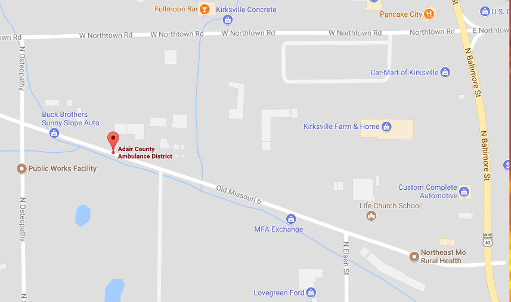

We operate a 2meter repeater on 145.130- 156.7 tone
We also operate a repeater on 442.750+ 103.5 tone
and currently a Packet digipeater on 145.070
Our club meets on the second Sunday of every month at 1:30pm
at The Adair County Ambulance Training Center 606 W Potter.

Our club is ready to give ham licensing tests. Just e-mail nemoarc@gmail.com to set up a test session.
CLUB OFFICERS - 2023
President Jim Farmer KA0BAT
Vice President Alex Fleak KD0YTE
Secretary Dan Aronson KE0WHL
Treasurer Don Bindner KD0PGM
Solar Data
Local Frequncies of Interest
- 145.130 W0CBL repeater negative offset 156.7 tone
- 442.750 repeater positive offset 103.5 tone DMR capable
- 146.550 ares hvcall
- 147.555 ares hv stage
- 145.650 ares hv tac2
Questions or comments can be sent to nemoarc@gmail.com
© 2015 Nemoarc.org All rights reserved.